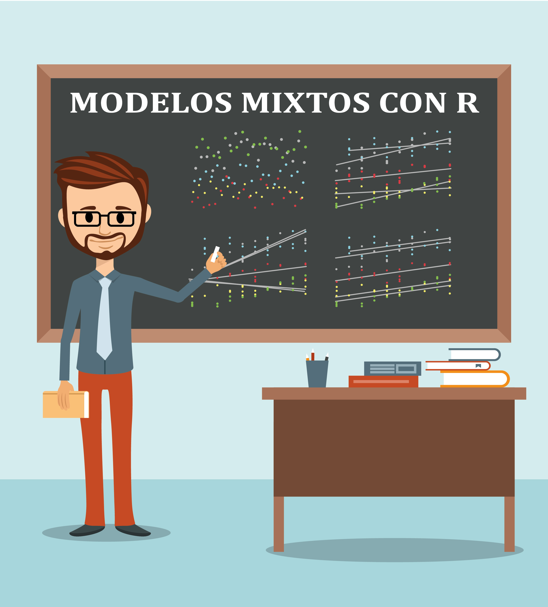

El libro Modelos mixtos con R esta disponible en este enlace de internet.

Ossa Saraz G A, López Martínez J L, Hernández Barajas F, Santana Rodríguez M O, Garces Blanquiceth J L. 2021. Estimación de la heredabilidad del intervalo entre partos en bovinos Romosinuano mediante el modelo lineal mixto generalizado. Ciencia y Tecnología Agropecuaria..
Ossa Saraz G A, López Martínez J L, Santana Rodríguez M O, Garces Blanquiceth J L. 2021. Heredabilidad y tendencias genéticas para caracteres del crecimiento en bovinos criollos Romosinuano. Archivos Latinoamericanos de Producción Animal.
Ossa Saraz G A, López Martínez J L, Quijano Bernal J H, Santana Rodríguez M O y Garcés Blanquiceth J L. 2021. Análisis retrospectivo de caracteres reproductivos en hembras bovinas criollas colombianas Romosinuano. Ciencia y Tecnología Agropecuaria.
López Martínez J L, Quijano Bernal J H, Garces Blanquiceth J L y Ossa Saraz G A. 2020. Efecto de caracteres propios e inherentes al animal sobre la edad al primer parto en la hembra bovina de la raza Romosinuano. Revista de la Facultad de Ciencias.
López Martínez J L, Quijano Bernal J H y González Herrera L G. 2019. Estimación de parámetros genéticos para producción de leche en el día de control y a los 305 días en primeras lactancias de vacas Lucerna. Livestock Research for Rural Development.
| Rol | Trabajo presentado | Nombre del congreso | Lugar | Año |
|---|---|---|---|---|
| Asistente | Factores ambientales y genéticos sobre la edad al primer parto en hembras de la raza Romosinuano | XVI simposio iberoamericano sobre conservación y utilización de recursos zoogenéticos | Villavicencio - Colombia | 2015 |
| Ponente | Análisis de efectos que influyen en el crecimiento pos-destete en animales de la raza Lucerna y sus cruces | XIII encuentro nacional y VI internacional de investigadores de las ciencias pecuarias | Medellín - Colombia | 2015 |
| Ponente | Estimación de parámetros genéticos para la producción de leche en el día de control y producción de leche a los 305 días en primeras lactancias de vacas Lucerna | XXV congreso de la asociación latinoamericana de producción animal y XI congreso nordestino de producao animal, la seguridad alimentaria en américa latina | Recife - Brasil | 2016 |
| Ponente | Modelado genético de la producción de leche en el día de control utilizando polinomios de Legendre | XIV encuentro nacional y VII internacional de investigadores de las ciencias pecuarias | Medellín - Colombia | 2017 |
| Asistente | Rday Medellín | Medellín - Colombia | 2019 |